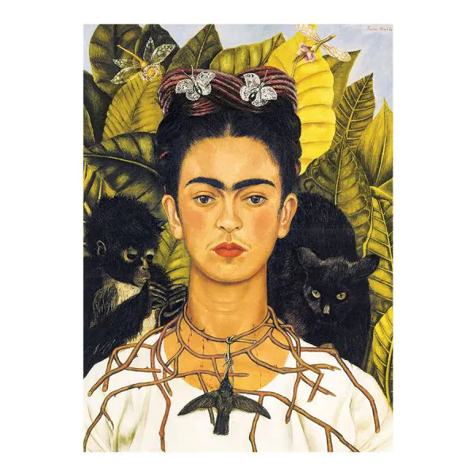

Frida Kahlo

"I paint flowers so they will not die."
Frida Kahlo (1907–1954) was a Mexican artist best known for her self-portraits that explore identity, postcolonialism, gender, and pain. Her unique style combined elements of surrealism and Mexican folk art, making her one of the most influential artists of the 20th century.
Identity, post-colonialism, gender, class, pain, and Mexican folk culture.
Blends realism, symbolism, and surrealism.
Back to Artists